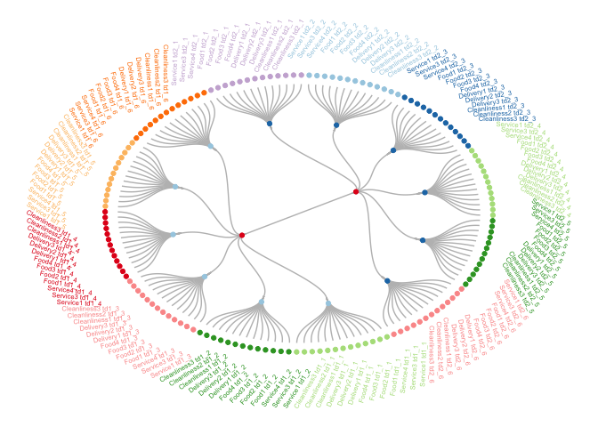
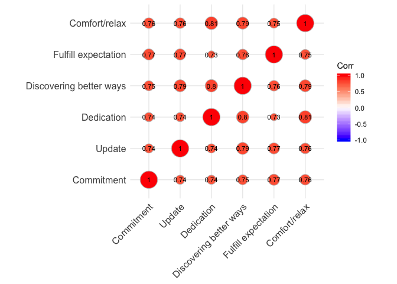
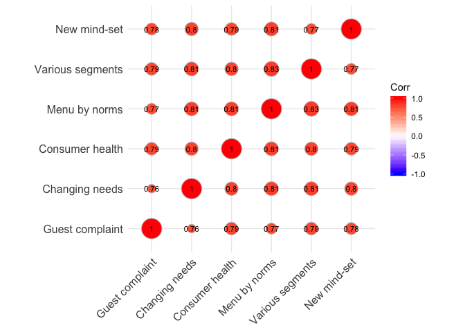
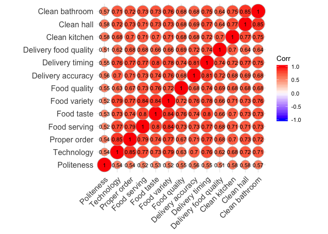
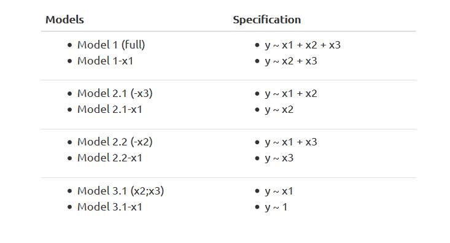
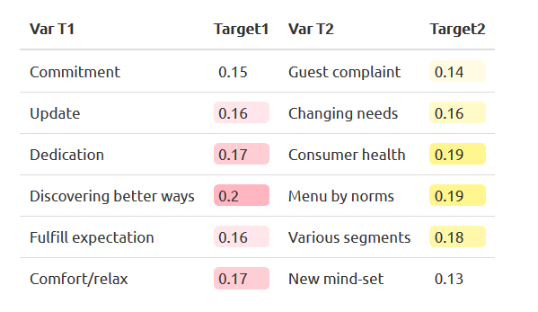
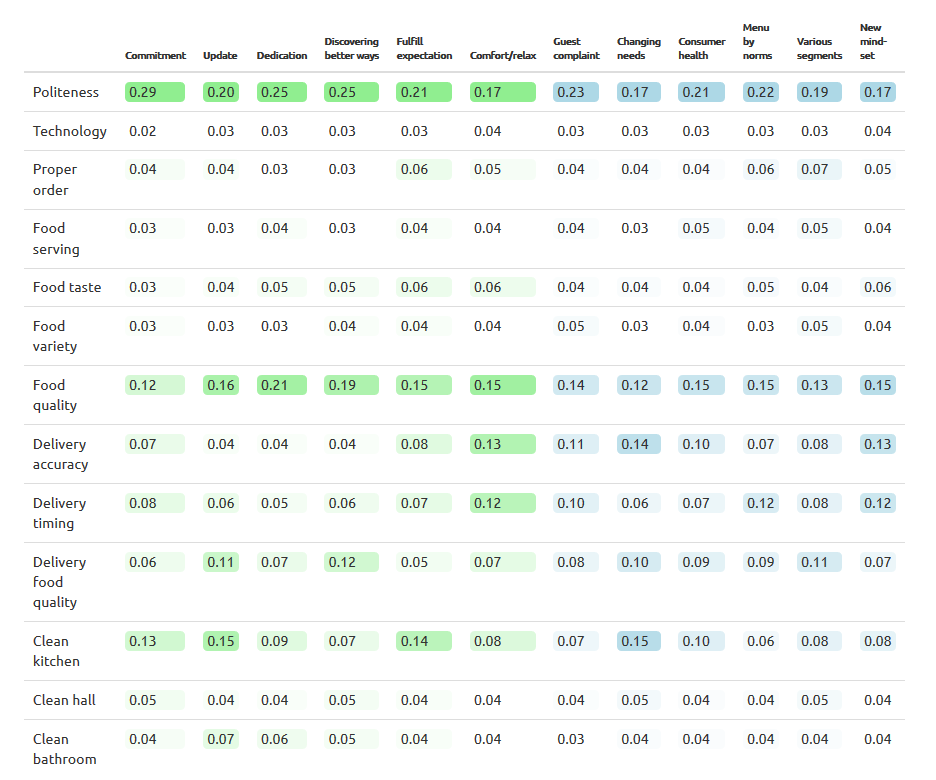

Introduction
In marketing research, the problem of multicollinearity can be raised as a result of using clients’ rating responses. People tend to answer to the question of some section/topic in relatively same way. The stronger the correlations between the explanatory variables, the larger the population variances of the distributions of their coefficients, and thus greater the risk of obtaining unreliable coefficients. Although the estimated coefficients will be unbiased, their high variance will decrease the $t$ value, which leads to the failure in rejecting the null hypothesis $H_0:\beta = 0$, and following reduction in the probability of correctly detecting a non-zero coefficient. However, high correlation does not necessarily mean having poor estimation: a large number of observations and sample variances of regressors with a low variance of the error term can produce good estimates. In the case of multicollinearity, data do not contain enough information to distinguish the individual effect of explanatory variables on the dependent variable. There are a lot of ways for solving the multicollinearity, here are some of them:
- Try to reduce disturbance term by including an omitted important variable in the model.
- Increase the number of observations to make standard errors smaller.
- Combine the collinear variables together into a single predictor.
- Drop one of the problematic variables from the regression.
It is often hard to obtain more data, so the first two methods are not applicable if the design stage of a survey is finished. The last method of solving the multicollinearity problem involves the risk that some of the missing variables may indeed belong to the model which can cause omitted variable bias. In this article, the Shapley value will be used to evaluate the importance of each explanatory variable in the model. The use of Shapley Values comes from the game theory and its purpose is to evaluate the worth of each player’s input over all possible combinations of players. As stated by Lipovetsky (Lipovetsky,2006), a regression model can be considered from the perspective of a coalition among players (predictors) to maximize the total value (quality of fitting). This approach yields a model called Shapley Value Regression. The case described in the article adresses customer satisfaction with the restaurant business. The main purpose will be to detect key drivers in the restaurant business and to avoid the problem of the high correlation between variables using this approach.
Data description
# load the required libraries used in the article
if (!require("pacman")) install.packages("pacman")
pacman::p_load(dplyr, readxl, knitr, kableExtra,
networkD3, ggcorrplot, stringr, radiant.data,
textshape, formattable, RColorBrewer, ggraph, igraph)
In order to solve the problem of finding the key drivers of the restaurant industry, a survey was conducted asking customers to complete a questionnaire covering various aspects of the restaurant.
Below is the description of variables from the synthetic data of
clients’ responses to a questionnaire that measures how people feel
about the main business drivers for restaurants. People express their
level of satisfaction after using the products of a restaurant. There is
a hierarchy in the data (see the graph below). The variable
Satisfaction will be described with two variables Target 1 and
Target 2. These two variables are represented with red dots on the
dendrogram below. These variables, in turn, will be explained by the
Drivers of Targets (blue and light blue dots on the dendrogram) and,
finally, each driver should be explained by items of drivers. Each
Driver of Target has 13 explanatory variables - items of drivers
grouped by a specific color.

All variables are observed and collected via survey and measured in rating scales (1 to 10).
data_desc <- read_excel("Shapley_Data_Rest.xlsx", sheet = "Labels")
options(knitr.kable.NA = '')
kable(data_desc) %>%
kable_styling(bootstrap_options = "striped",
full_width = F, font_size = 14) %>%
pack_rows("Drivers of Targets", 4, 15) %>%
pack_rows("Items of Drivers", 16, 28) %>%
column_spec(2, bold = T, italic = T, width = "5cm")
| Variable Name | Group | Statements (Variable Description) |
|---|---|---|
| Satisfaction | Overall satisfaction of customer | |
| Target 1 | A restaurant that enables you to step up in life | |
| Target 2 | A restaurant that allows you to live the life you choose | |
| Drivers of Targets | ||
| Commitment | Target 1 | Showing commitment to people |
| Update | Continuously updating restaurant | |
| Dedication | Sincerely acting in your interest | |
| Discovering better ways | Discovering better ways to win favor with you | |
| Fulfill expectation | Focus on fulfilling guest’s expectations | |
| Comfort/relax | Delivering the resources to enable you to feel comfortable and relax | |
| Guest complaint | Target 2 | Taking into consideration guest complaints |
| Changing needs | Continuously staying relevant by understanding changing customer needs | |
| Consumer health | Focus on consumer health | |
| Menu by norms | Modifying menu items driven by regulatory norms | |
| Various segments | Work for various customer segments | |
| New mind-set | Understanding the new consumer mind-set | |
| Items of Drivers | ||
| Service1 | Service | Gives polite and prompt answers/advice to my questions |
| Service2 | Use state-of-the-art technology (waiters enter order digital system, POS, online payment etc.) | |
| Service3 | Bring an order quickly and properly | |
| Food1 | Food | Serving food |
| Food2 | Taste of food | |
| Food3 | The variety of menu | |
| Food4 | The quality of food | |
| Delivery1 | Delivery | Preciseness |
| Delivery2 | Timing | |
| Delivery3 | Quality of food | |
| Cleanliness1 | Cleanliness | Cleanliness in the kitchen |
| Cleanliness2 | Cleanliness in the hall | |
| Cleanliness3 | Cleanliness in the bathroom |
There are a total of 28 questions. Thirteen are about restaurant
service, food, delivery, and cleanliness. For example Service2:
clients are asked to evaluate their satisfaction with the usage of
state-of-the-art technology (waiters enter order digital system, POS,
online payment).
We want to know how the variables relate to the satisfaction of clients at each level. In each step, the most important variable should be selected.
df <- read_excel("Shapley_Data_Rest.xlsx", sheet = "Data")
dim(df)
## [1] 500 28
There are 500 respondents who have answered 28 questions in the synthetic dataset. It can be seen that the ratings are highly correlated:
paste("The correlation between Target 1 and Target 2 is", round(cor(df[,2:3])[2],3))
## [1] "The correlation between Target 1 and Target 2 is 0.859"
There is high correlation between the effort of the restaurant to help the clients step up in life and its effort to provide the life their customers choose. The presence of a high correlation between the independent variables can produce erratic coefficients.
corfun <- function(x){corr <- round(cor(x), 2)
ggcorrplot(corr, lab = TRUE, method = "circle", lab_size = 3)}
corfun(df[,4:9])

The plot above shows the correlation between the drivers of target 1. It
can be seen that the Pearson correlation coefficients for all pairs are
more than 0.73. The highest correlation is between the variables
Dedication (the restaurant is sincerely acting in your interest) and
Comfort/relax (restaurant provides the resources to enable you to feel
comfortable and relaxed).
corfun(df[,10:15])

The plot above shows the correlation between the drivers of target 2.
Similarly, there are high correlations between all pairs of variables.
The highest correlation is between the variables Menu by norms
(restaurant modifies menu items driven by regulatory norms) and
Various segments (restaurant works for various customer segments).
corfun(df[,16:28])

Finally, for the last level, the correlation between the items of drivers is considered. As can be expected, there is high correlation in each group of items. The highest correlation is between the cleanliness in the hall and bathroom, followed by the strong correlation between the taste of food and quality of food, and between the taste of food and the variety of the menu.
We are going to study Shapley value to detect how it can be used to avoid multicollinearity and detecting the key driver for the restaurant industry.
Shapley value regression
Shapley Value Regression is based on the thesis and post-doctoral work of an American mathematician and a Nobel Prize-winning economist Lloyd Shapley (1953). The Shapley value is a central solution concept in cooperative game theory. In order to assess the player’s contribution in a game, each individual player has its own assigned value. The Shapley value associated with each player in each game has a unique payoff - his ‘value’ (expected marginal contribution to a random coalition). The application of this value in regression analysis is quite intuitive: thisS approach evaluates the contribution of each regressor variables to the model. When fitting the multiple linear regression model, the obtained $R^2$ does not show the effect of each variable in explaining the depending variable (in the cooperative game). To distinguish the contribution made by the individual member of the game, the Shapley value decomposition should be used. The share of the regressor variable $x_i$ for a given set of $k$ predictor variables is given by the following formula:
$$ S({x_i}) = \frac{1}{k} * \sum_{r=1}^{k} * \frac{ \sum_{c=1}^{l} (R^2_{i,r}-R^2_{j,r-1})}{l} $$
where
- $k$ is the number of regressor variables in the multiple linear regression model
- $R^2_{(i,r)}$ obtained from the model where the regressors are an r-membered subset of all possible regressors with $i^{th}$ variable
- $R^2_{(j,r-1)}$ obtained from the model where the regressors are an r-membered subset of all possible regressors without $i^{th}$ variable.
Suppose we have 3 variables, and we want to obtain Shapley value for the
variable $x_1$. We will have the eight possibilities to fit a linear
regression with these 3 variables: 0, x1, x2, x3, x1 x2,
x1 x3, x2 x3, x1 x2 x3. In this case $i=1$, because the
computation is done for $x_1$, $r=3$ and, thus, $r-1=2$, $k=3$ is the
number of cases of possible models, $l$ is the number of models in each
case:

The weights of the regressions are based on the number of possible models. We will have
- 2 regressions where $x_1$ is used with one other explanatory
variable:
(x1, x2); (x1, x3) - 1 regression where $x_1$ is used alone
(x1) - 1 regression where $x_1$ is used with two other variables
(x1,x2,x3)
Thus we will have the following weighted Shapley value for the variable $x_1$:
$$ SV_{x_1} = \dfrac{1}{3}(R^2_{x_1}-R^2_{\beta_0})+\dfrac{1}{6}(R^2_{x_1;x_2}-R^2_{x_2}) + \dfrac{1}{6}(R^2_{x_1;x_3}-R^2_{x_3}) + \dfrac{1}{3}(R^2_{x_1;x_2;x_3}-R^2_{x_2;x_3}) $$
In order to evaluate the key drivers of restaurant industries, we will use the regression described above.
Implementing in R
Level 1
For the first level, we need to evaluate how the variables Target 1 (a
restaurant that enables you to step up in life) and Target 2 (a
restaurant that allows you to live the life you choose) explain the
overall satisfaction of the customer.
colnames(df)[2] <- "Target1"
colnames(df)[3] <- "Target2"
reglev1 <- lm(Satisfaction ~ Target1 + Target2, data = df)
summary(reglev1)
##
## Call:
## lm(formula = Satisfaction ~ Target1 + Target2, data = df)
##
## Residuals:
## Min 1Q Median 3Q Max
## -5.2795 -0.7771 0.0047 0.8526 7.0956
##
## Coefficients:
## Estimate Std. Error t value Pr(>|t|)
## (Intercept) 2.18626 0.23658 9.241 < 2e-16 ***
## Target1 0.50239 0.06295 7.981 1.01e-14 ***
## Target2 0.21578 0.06381 3.381 0.000778 ***
## ---
## Signif. codes: 0 '***' 0.001 '**' 0.01 '*' 0.05 '.' 0.1 ' ' 1
##
## Residual standard error: 1.488 on 497 degrees of freedom
## Multiple R-squared: 0.4831, Adjusted R-squared: 0.481
## F-statistic: 232.2 on 2 and 497 DF, p-value: < 2.2e-16
The implemented regression shows that both variables are statistically
significant. And based on estimated coefficients the variable Target 1
is more important. However, we cannot see the relative importance of
each variable by just looking at the summary of linear regression
models. So, the Shapley Values will be used, for both coefficients
separately, to identify the most important driver of clients’ overall
satisfaction at the first level.
Creating a universal function for Shapley value calculation:
shap <- function(formula, var){
ifelse(length(str_split(paste(formula)[3],
pattern = "\\s\\+", simplify = T))!=1,
summary(lm(data=df, formula))$r.squared -
summary(lm(data=df, as.formula(
gsub(paste0(paste(formula)[2], paste(formula)[1],
paste(formula)[3]),pattern = paste0("\\+", var),
replacement = ""))))$r.squared,
summary(lm(data=df, formula ))$r.squared - summary(
lm(data=df, as.formula(paste0(
paste(formula)[2],paste(formula)[1],1))))$r.squared)}
We need to calculate the Shapley value for each independent variable using the functions above:
(ShapValT1 <- 1/2*shap(
formula = Satisfaction ~ +Target1+Target2, var = "Target1") +
1/2 * shap(formula = Satisfaction ~ +Target1,
var = "Target1"))
## [1] 0.2687259
(ShapValT2 <- 1/2*shap(
formula = Satisfaction ~ +Target1+Target2, var = "Target2") +
1/2 * shap(formula = Satisfaction ~ +Target2,
var = "Target2"))
## [1] 0.2084265
Finally, calculated values are re-based so that they add up to 1:
shaplev1 <- data.frame(
ShapValT1 = ShapValT1/(ShapValT1+ShapValT2),
ShapValT2 = ShapValT2/(ShapValT1+ShapValT2))
kable(t(shaplev1)) %>%
kable_styling(bootstrap_options = "striped", full_width = F)
| ShapValT1 | 0.5631867 |
|---|---|
| ShapValT2 | 0.4368133 |
It can be seen that Target 1 is the most important at 0.56. In other
words, the overall satisfaction of the customer is mostly described by
the ability of the restaurant to help clients step up in life. We can
decompose the regression and find out what the r-squared is made of and
have a similar result by using the function calc.relimp from the
package relaimpo. The package provides the relative importance metric
lmg introduced by Lindemann, Merenda, and Gold.
library(relaimpo)
calc.relimp(reglev1, type = c("lmg"),
rela = TRUE, rank = TRUE)
## Response variable: Satisfaction
## Total response variance: 4.26796
## Analysis based on 500 observations
##
## 2 Regressors:
## Target1 Target2
## Proportion of variance explained by model: 48.31%
## Metrics are normalized to sum to 100% (rela=TRUE).
##
## Relative importance metrics:
##
## lmg
## Target1 0.5562547
## Target2 0.4437453
##
## Average coefficients for different model sizes:
##
## 1X 2Xs
## Target1 0.6853051 0.5023914
## Target2 0.6533959 0.2157771
It can be seen from the table Relative importance metrics: that,
although, the lmg value slightly differs from the above calculated
one, the conclusion is the same.
Level 2
To indicate the most important explanatory variable/s for Target 1 and
Target 2 the drivers of these variables will now be studied. Now, the
variable Target 1 and Target 2 are dependent on their drivers of the
target correspondingly.
reglev2t1 <- lm(Target1 ~ td1_1 + td1_2 + td1_3 +
td1_4 + td1_5 + td1_6, data = df)
reglev2t2 <- lm(Target2 ~ td2_1 + td2_2 + td2_3 +
td2_4 + td2_5 + td2_6, data = df)
shaplev2t1 <- calc.relimp(reglev2t1, type = c("lmg"),
rela = TRUE, rank = TRUE)$lmg
shaplev2t2 <- calc.relimp(reglev2t2, type = c("lmg"),
rela = TRUE, rank = TRUE)$lmg
shaplev2 <- data.frame(cbind(c("Commitment", "Update",
"Dedication", "Discovering better ways",
"Fulfill expectation", "Comfort/relax"),
round(as.numeric(shaplev2t1),2), c("Guest complaint",
"Changing needs", "Consumer health", "Menu by norms",
"Various segments", "New mind-set"),
round(as.numeric(shaplev2t2),2)))
colnames(shaplev2) <- c("Var T1", "Target1",
"Var T2", "Target2")
shaplev2 %>%
rownames_to_column('shap') %>%
mutate(Target1 = color_tile("white","lightpink")(Target1),
Target2 = color_tile("white","khaki1")(Target2)) %>%
column_to_rownames('shap') %>%
kable(escape = F, booktabs = T) %>%
kable_styling( full_width = F, font_size = 13)
In the case of Target 1, the focus of the restaurant on discovering
better ways to win favor with its clients is the most important key
driver for the target variable. For Target 2 (a restaurant that allows
you to live the life you choose) the most two important variables are
the focus of the restaurant on consumer health (actually, the score for
Consumer health is 0.1899209, the score for Menu by norms is
0.1895162).

Level 3
And finally, we will attempt to reveal the most important variable for
each driver of targets. The result from package relaimpo is in the
table below:
shaplev3 <- sapply(colnames(df[-c(1:3, 16:28)]),
function(x){form <- as.formula(
paste0(x,"~Service1 + Service2 + Service3 + Food1 +
Food2 + Food3 + Food4 + Delivery1 + Delivery2 +
Delivery3 + Cleanliness1 + Cleanliness2 + Cleanliness3"))
reglev3 <- lm(form, data = df)
calc.relimp(reglev3 , type = c("lmg"),
rela = TRUE, rank = TRUE)$lmg})
cn <- colnames(shaplev3)
rownames(shaplev3) <- c("Politeness", "Technology",
"Proper order","Food serving", "Food taste",
"Food variety","Food quality", "Delivery accuracy",
"Delivery timing", "Delivery food quality",
"Clean kitchen", "Clean hall", "Clean bathroom")
data.frame(round(shaplev3,2)) %>%
rownames_to_column('shap') %>% mutate(
td1_1 =color_tile("white","lightgreen")(td1_1),
td1_2 =color_tile("white","lightgreen")(td1_2),
td1_3 =color_tile("white","lightgreen")(td1_3),
td1_4 =color_tile("white","lightgreen")(td1_4),
td1_5 =color_tile("white","lightgreen")(td1_5),
td1_6 =color_tile("white","lightgreen")(td2_6),
td2_1 =color_tile("white","lightblue")(td2_1),
td2_2 =color_tile("white","lightblue")(td2_2),
td2_3 =color_tile("white","lightblue")(td2_3),
td2_4 =color_tile("white","lightblue")(td2_4),
td2_5 =color_tile("white","lightblue")(td2_5),
td2_6 =color_tile("white","lightblue")(td2_6)) %>%
column_to_rownames('shap') %>%
rename("Commitment" = cn[1], "Update" = cn[2],
"Dedication" = cn[3], "Discovering better ways" = cn[4],
"Fulfill expectation" = cn[5], "Comfort/relax" = cn[6],
"Guest complaint" = cn[7], "Changing needs" = cn[8],
"Consumer health" = cn[9], "Menu by norms" = cn[10],
"Various segments" = cn[11], "New mind-set" = cn[12]) %>%
kable(escape = F, booktabs = T) %>%
kable_styling( full_width = F, font_size = 13) %>%
row_spec(0, bold = T, font_size = 9)

It seems that politeness of staff is the most important item for all drivers (for both targets). In other words, the satisfaction of clients with the staff attitude toward customers has the biggest impact and makes up to approximately 20% of their argument in your favor. For almost all drivers the quality of food is the second key item in terms of importance. The cleanliness in the kitchen is the third dominant item for drivers like continuously updating restaurants, acting in the interest of the customer, fulfilling their expectations and paying attention to consumer health. For the following drivers: discovering better ways to win favor with the customer, working for various customer segments the quality of delivery food is the third important variable. And finally, the accuracy of delivery is important in the positive assessment of such drivers as delivering the resources to enable clients to feel comfortable and relax, taking into consideration guest complaints, understanding the changing needs and a new mindset of customer and paying attention to consumer health.
Conclusion
Shapley Value Regression is widely used in ranked customer responses, because of multicollinearity. In order to understand the key drivers of successful restaurant business the Shapley Value, which shows the relative importance of predictors, can be used. The idea of Shapley value regression is in the changes in $R^2$ when the chosen predictor is removed from the model. So for each regressor, all possible subsets of the remaining predictors are used to evaluate the regression and the explanatory variable with the highest additional contribution will be the most important prediction.
Shapley value assigns relative ranking for each predictor by showing the
dominance of explanatory variables: from the Shapley values regression,
we can conclude that the variable about the ability of restaurant assist
its customers in stepping up in life is the most important in describing
their overall satisfaction. In the second stage analysis, the dominant
variable became the effort of the restaurant to discover better ways to
win favor with clients (for Target 1) and paying attention to
consumer’s health is most important for Target 2. Finally, the third
level shows that for this task the politeness of staff mostly impacts
gaining a positive attitude of customers toward the restaurant.
For other types of models (for example generalized linear models: logistic, Poisson regression, etc.) calculation of $R^2$ is not appropriate and the approach of using pseudo-$R^2$ or other approached to calculate the relative weights (see here) will be applied. Also, for the future work adjusted $R^2$ (as number of regressors in different models is different) instead of $R^2$ can be considered.
Reference List
Mishra, S.K. (2016) “Shapley value regression and the resolution of multicollinearity”, MPRA, (72116). Available at: https://mpra.ub.uni-muenchen.de/72116/.
Lipovetsky, S. (2006) “Entropy Criterion In Logistic Regression And Shapley Value Of Predictors”, Journal of modern applied statistical methods: JMASM
Hart S. (1989) Shapley Value. In: Eatwell J., Milgate M., Newman P. (eds) Game Theory. The New Palgrave. Palgrave Macmillan, London